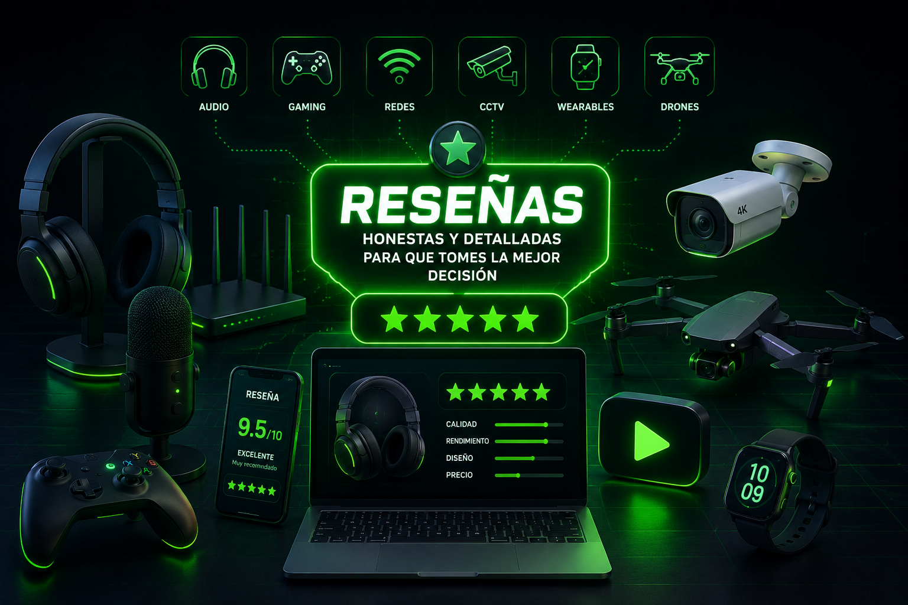

Steren COM-818
Repetidor Wi-Fi: reseña honesta, experiencia real de uso, puntos fuertes y detalles a considerar antes de comprar.
Ver reseña →🎧 Audio · 🎮 Gaming · 📡 Redes · 📹 CCTV · ⌚ Wearables · 🚁 Drones
Aquí encontrarás las reseñas trabajadas en el canal, organizadas por categoría para que puedas encontrar más rápido el producto o tema que necesitas.

Selecciona una categoría o usa el buscador para filtrar el contenido.
Repetidor Wi-Fi: reseña honesta, experiencia real de uso, puntos fuertes y detalles a considerar antes de comprar.
Ver reseña →Capturadora HDMI: reseña honesta, experiencia real de uso, puntos fuertes y detalles a considerar antes de comprar.
Ver reseña →Reloj Inteligente: reseña honesta, experiencia real de uso, puntos fuertes y detalles a considerar antes de comprar.
Ver reseña →Freepods: reseña honesta, experiencia real de uso, puntos fuertes y detalles a considerar antes de comprar.
Ver reseña →Reproductor portátil HiFi: reseña honesta, experiencia real de uso, puntos fuertes y detalles a considerar antes de comprar.
Ver reseña →Cámara Deportiva WiFi 4K: reseña honesta, experiencia real de uso, puntos fuertes y detalles a considerar antes de comprar.
Ver reseña →Reloj Inteligente: reseña honesta, experiencia real de uso, puntos fuertes y detalles a considerar antes de comprar.
Ver reseña →Bocina inteligente: reseña honesta, experiencia real de uso, puntos fuertes y detalles a considerar antes de comprar.
Ver reseña →Pantalla inteligente: reseña honesta, experiencia real de uso, puntos fuertes y detalles a considerar antes de comprar.
Ver reseña →Repetidor/Router Doble Banda: reseña honesta, experiencia real de uso, puntos fuertes y detalles a considerar antes de comprar.
Ver reseña →Cámara de CCTV: reseña honesta, experiencia real de uso, puntos fuertes y detalles a considerar antes de comprar.
Ver reseña →Cámara de CCTV: reseña honesta, experiencia real de uso, puntos fuertes y detalles a considerar antes de comprar.
Ver reseña →Receptor de Audio Bluetooth: reseña honesta, experiencia real de uso, puntos fuertes y detalles a considerar antes de comprar.
Ver reseña →Pulsera Inteligente: reseña honesta, experiencia real de uso, puntos fuertes y detalles a considerar antes de comprar.
Ver reseña →Mini Nobreak: reseña honesta, experiencia real de uso, puntos fuertes y detalles a considerar antes de comprar.
Ver reseña →Router 4G Portátil: reseña honesta, experiencia real de uso, puntos fuertes y detalles a considerar antes de comprar.
Ver reseña →Consola de Videojuegos Retro: reseña honesta, experiencia real de uso, puntos fuertes y detalles a considerar antes de comprar.
Ver reseña →Cámara Deportiva: reseña honesta, experiencia real de uso, puntos fuertes y detalles a considerar antes de comprar.
Ver reseña →Audífonos Gamer: reseña honesta, experiencia real de uso, puntos fuertes y detalles a considerar antes de comprar.
Ver reseña →MiniDron: reseña honesta, experiencia real de uso, puntos fuertes y detalles a considerar antes de comprar.
Ver reseña →Cámara de CCTV: reseña honesta, experiencia real de uso, puntos fuertes y detalles a considerar antes de comprar.
Ver reseña →TV Box: reseña honesta, experiencia real de uso, puntos fuertes y detalles a considerar antes de comprar.
Ver reseña →Disco Inteligente para Barrer: reseña honesta, experiencia real de uso, puntos fuertes y detalles a considerar antes de comprar.
Ver reseña →Adaptador USB WiFi Doble Banda: reseña honesta, experiencia real de uso, puntos fuertes y detalles a considerar antes de comprar.
Ver reseña →TV Box: reseña honesta, experiencia real de uso, puntos fuertes y detalles a considerar antes de comprar.
Ver reseña →Reloj Inteligente: reseña honesta, experiencia real de uso, puntos fuertes y detalles a considerar antes de comprar.
Ver reseña →Bocinas Bluetooth TWS: reseña honesta, experiencia real de uso, puntos fuertes y detalles a considerar antes de comprar.
Ver reseña →Bocina inteligente: reseña honesta, experiencia real de uso, puntos fuertes y detalles a considerar antes de comprar.
Ver reseña →Dispositivo de streaming: reseña honesta, experiencia real de uso, puntos fuertes y detalles a considerar antes de comprar.
Ver reseña →Micrófonos Inalámbricos: reseña honesta, experiencia real de uso, puntos fuertes y detalles a considerar antes de comprar.
Ver reseña →Barras Ambientales LED WiFi: reseña honesta, experiencia real de uso, puntos fuertes y detalles a considerar antes de comprar.
Ver reseña →Reloj Inteligente: reseña honesta, experiencia real de uso, puntos fuertes y detalles a considerar antes de comprar.
Ver reseña →Rastreador Bluetooth para iOS: reseña honesta, experiencia real de uso, puntos fuertes y detalles a considerar antes de comprar.
Ver reseña →Monitor Portátil HD 11.6": reseña honesta, experiencia real de uso, puntos fuertes y detalles a considerar antes de comprar.
Ver reseña →Dron: reseña honesta, experiencia real de uso, puntos fuertes y detalles a considerar antes de comprar.
Ver reseña →Repetidor WiFi: reseña honesta, experiencia real de uso, puntos fuertes y detalles a considerar antes de comprar.
Ver reseña →Dron: reseña honesta, experiencia real de uso, puntos fuertes y detalles a considerar antes de comprar.
Ver reseña →Reloj Inteligente: reseña honesta, experiencia real de uso, puntos fuertes y detalles a considerar antes de comprar.
Ver reseña →Reloj Inteligente: reseña honesta, experiencia real de uso, puntos fuertes y detalles a considerar antes de comprar.
Ver reseña →Reloj Inteligente: reseña honesta, experiencia real de uso, puntos fuertes y detalles a considerar antes de comprar.
Ver reseña →Audífonos Bluetooth: reseña honesta, experiencia real de uso, puntos fuertes y detalles a considerar antes de comprar.
Ver reseña →Audífonos Bluetooth: reseña honesta, experiencia real de uso, puntos fuertes y detalles a considerar antes de comprar.
Ver reseña →Reloj Inteligente: reseña honesta, experiencia real de uso, puntos fuertes y detalles a considerar antes de comprar.
Ver reseña →Mini Proyector HD: reseña honesta, experiencia real de uso, puntos fuertes y detalles a considerar antes de comprar.
Ver reseña →Control Bluetooth Para Videojuegos: reseña honesta, experiencia real de uso, puntos fuertes y detalles a considerar antes de comprar.
Ver reseña →Audífonos Bluetooth Para Lentes: reseña honesta, experiencia real de uso, puntos fuertes y detalles a considerar antes de comprar.
Ver reseña →Laptop Chromebook: reseña honesta, experiencia real de uso, puntos fuertes y detalles a considerar antes de comprar.
Ver reseña →Cámara de CCTV: reseña honesta, experiencia real de uso, puntos fuertes y detalles a considerar antes de comprar.
Ver reseña →Batería de Respaldo 10,000 mAh: reseña honesta, experiencia real de uso, puntos fuertes y detalles a considerar antes de comprar.
Ver reseña →Micrófonos Inalámbricos: reseña honesta, experiencia real de uso, puntos fuertes y detalles a considerar antes de comprar.
Ver reseña →Control Alámbrico Gamer: reseña honesta, experiencia real de uso, puntos fuertes y detalles a considerar antes de comprar.
Ver reseña →Micrófonos Inalámbricos: reseña honesta, experiencia real de uso, puntos fuertes y detalles a considerar antes de comprar.
Ver reseña →Consola Portátil: reseña honesta, experiencia real de uso, puntos fuertes y detalles a considerar antes de comprar.
Ver reseña →Audífonos OWS Bluetooth: reseña honesta, experiencia real de uso, puntos fuertes y detalles a considerar antes de comprar.
Ver reseña →Audífonos Alámbricos: reseña honesta, experiencia real de uso, puntos fuertes y detalles a considerar antes de comprar.
Ver reseña →Módulo Bluetooth Para Audífonos: reseña honesta, experiencia real de uso, puntos fuertes y detalles a considerar antes de comprar.
Ver reseña →Monitor de 27": reseña honesta, experiencia real de uso, puntos fuertes y detalles a considerar antes de comprar.
Ver reseña →Audífonos Gamer: reseña honesta, experiencia real de uso, puntos fuertes y detalles a considerar antes de comprar.
Ver reseña →Micrófono Para Podcast: reseña honesta, experiencia real de uso, puntos fuertes y detalles a considerar antes de comprar.
Ver reseña →Radio AM-FM Multimedia: reseña honesta, experiencia real de uso, puntos fuertes y detalles a considerar antes de comprar.
Ver reseña →Radios de comunicación: reseña honesta, experiencia real de uso, puntos fuertes y detalles a considerar antes de comprar.
Ver reseña →Control Inalámbrico Gamer: reseña honesta, experiencia real de uso, puntos fuertes y detalles a considerar antes de comprar.
Ver reseña →Kit Teclado, mouse y pad Gamer: reseña honesta, experiencia real de uso, puntos fuertes y detalles a considerar antes de comprar.
Ver reseña →Barra de Sonido para PC: reseña honesta, experiencia real de uso, puntos fuertes y detalles a considerar antes de comprar.
Ver reseña →